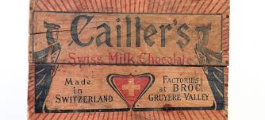
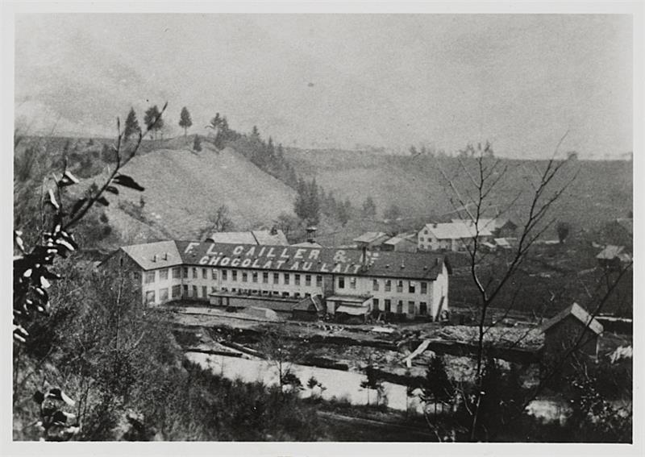
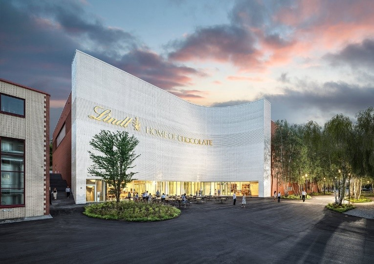

Heinrich Escher, Bürgermeister von Zürich erwähnte das erste Mal Schokolade in der Schweiz. Er hatte auf einer Reise nach Brüssel Schokolade entdeckt und brachte diese nach Zürich.
Schokolade wurde in der Schweiz immer beliebter und entwickelte sich zu einer luxuriösen Ware, die vor allem in den höheren Gesellschaftsschichten sehr geschätzt wurde.
François-Louis Cailler gründete die erste mechanische Schokoladenfabrik der Schweiz in Vevey und legte damit den Grundstein für die industrielle Schokoladenproduktion im Land.
Philippe Suchard eröffnet eine Schokoladenfabrik in Serrières bei Neuenburg und trug zur Weiterentwicklung der Schokoladenherstellung bei.
David Sprüngli und sein Sohn Rudolf Sprüngli-Ammann die erste feste Schokoladentafel in der Deutschschweiz her.
Daniel Peter trat dem Unternehmen Cailler bei und heiratete die Tochter von François-Louis Cailler, woraus eine enge familiäre Verbindung und Zusammenarbeit in der Schokoladenproduktion entstand.
Daniel Peter veränderte die Welt der Schokolade mit der Erschaffung der Milchschokolade, indem er Schokolade mit frischer Milch kombinierte.
Rodolphe Lindt erfand das Conchierverfahren, das die Textur der Schokolade bemerkenswert verbesserte und ihr einen zarten, glatten Schmelz verlieh.
Die Firma Cailler kaufte ein Anwesen in der Nähe der Mühle in Broc, wo 1898 die noch heute bestehende Schokoladenfabrik ihren Betrieb aufnahm.
Toblerone wird von Theodor Tobler und Emil Baumann in Bern gegründet. Die einzigartige dreieckige Form der Toblerone-Schokolade wurde ein Markenzeichen.
Cailler schloss sich mit Nestlé zusammen und wurde dadurch Teil eines der größten Lebensmittelkonzerne der Welt, was der Marke noch breiterer Reichweite und Bekanntheit verschaffte.
Rudolf Läderach Jr. erfand ein Verfahren zur Herstellung dünner Schokoladentrüffelhüllen, dass die Herstellung weiter verbesserte.
Chocolat Frey, gegründet 1887, wurde Teil der Migros-Genossenschaft und baute sich zu einer der führenden Schweizer Schokoladenmarken auf.
Lindt & Sprüngli expandierte global und verstärkte seine Präsenz auf dem amerikanischen Markt. Dies führte zu einer weiteren Steigerung der Markenbekanntheit.
Eröffnung des Lindt Home of Chocolate in Kilchberg, ein modernes Schokoladenmuseum mit vielen interaktiven Ausstellungen und guten Einblicken in die Geschichte und Herstellung von Schokolade.
Elias Läderach, Mitglied der Gründerfamilie von Läderach, gewann den Titel des "World Chocolate Master" und bestätigte damit die Exzellenz der Schweizer Schokoladenkunst.